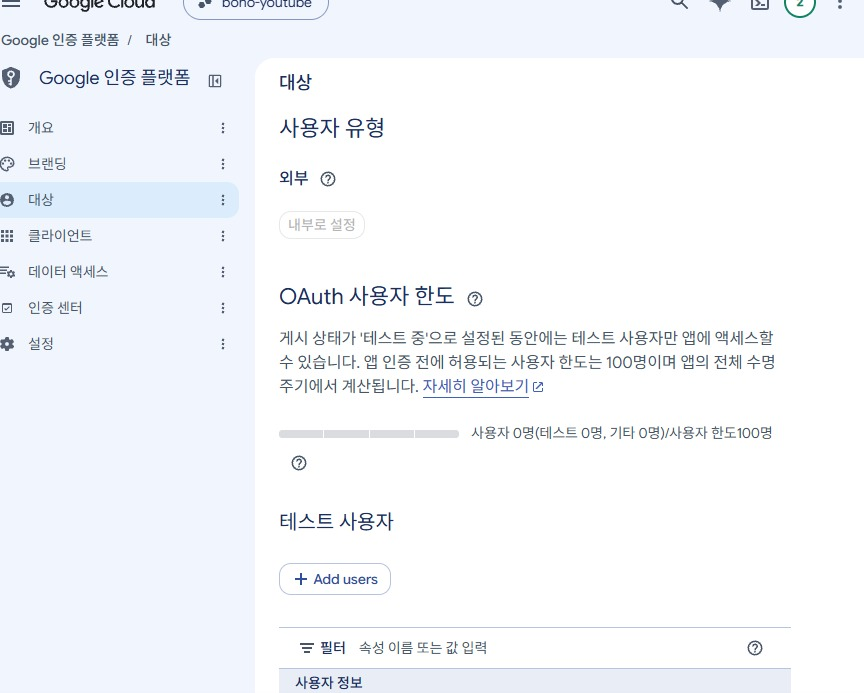
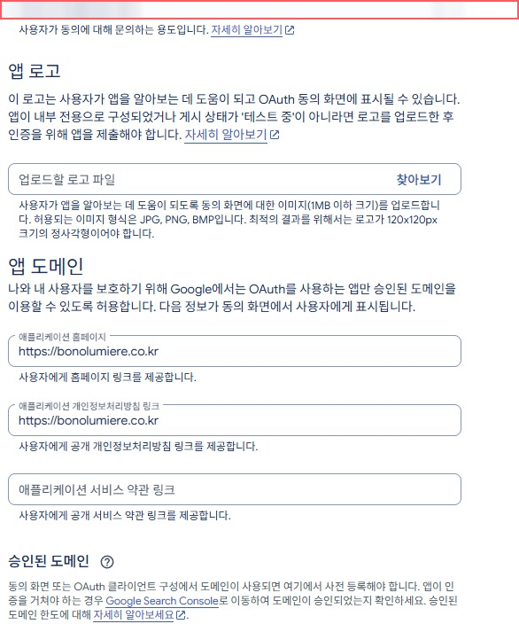
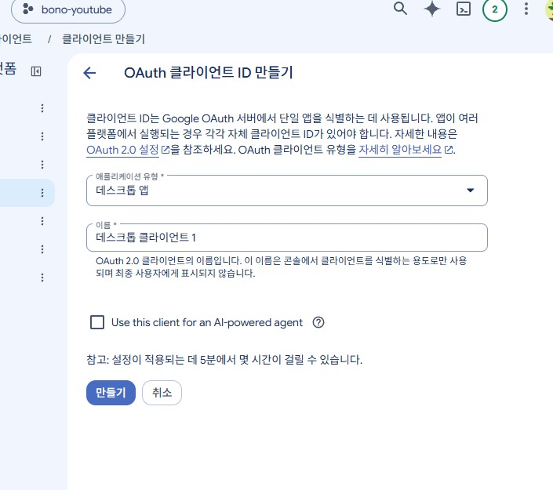
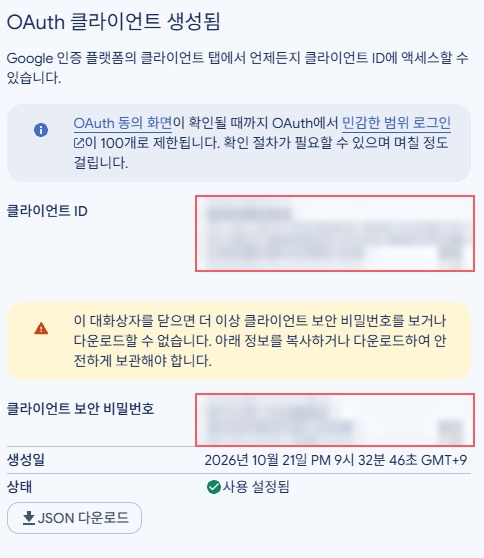

유튜브 자동 업로드 연결하기 (구글 설정, 24분)
구글 클라우드에서 유튜브 자동 업로드를 연결한 과정이에요. 저희는 24분 걸렸고 비용은 0원이었어요. 막힌 곳 2개와 푸는 법도 같이 적었어요.
전체 흐름 한눈에
- 구글 클라우드 '대상' 화면 열기
- 게시를 누르면 브랜딩 안내가 떠요
- 브랜딩에 세 가지 입력하기
- 다시 게시하고 경고 팝업 확인
- '데스크톱 앱' 클라이언트 만들기
- 만들어진 뒤 JSON 파일 내려받기
- .env 파일에 키 붙여 넣기
- 연결하기: 로그인과 '허용'은 사람이
따라 하기
구글 클라우드 '대상' 화면 열기
구글 클라우드에서 앱의 대상 화면으로 들어가요. 여기에 '게시 상태'가 보여요. '테스트 중'이면 7일마다 연결이 풀려요. 그래서 게시 상태를 바꿀 거예요.
💡 로그인은 사람이 직접 해요.게시를 누르면 브랜딩 안내가 떠요
게시 상태를 바꾸려고 하면 저희는 "앱을 게시하려면 브랜딩 페이지에서 구성을 완료해야 합니다"라는 안내를 만났어요. 겁먹지 않으셔도 돼요. 브랜딩 메뉴로 가서 빈칸을 채우면 돼요.대상 화면→게시 시도→브랜딩 안내→브랜딩 메뉴로브랜딩에 세 가지 입력하기
브랜딩 화면에 홈페이지, 개인정보처리방침, 승인된 도메인을 넣어요. 저희는 이렇게 하니 통과했어요. 승인된 도메인은 www 없이 적어요. 앱 로고는 비워 둬요. 올리면 심사가 필요해요.
💡 도메인 맨 앞의 www는 빼요.다시 게시하고 경고 팝업 확인
다시 대상 화면에서 게시해요. 경고 팝업이 뜨면 확인을 눌러요. 본인 계정만 쓰는 경우에는 인증 제출이 필요 없었어요.대상 화면→게시 누르기→경고 팝업→확인 누르기'데스크톱 앱' 클라이언트 만들기
클라이언트를 만드는 화면으로 가요. 종류는 데스크톱 앱을 골라요. 이름을 정하고 만들어요.
만들어진 뒤 JSON 파일 내려받기
클라이언트가 만들어지면 화면에 정보가 떠요. 보안 비밀번호는 이때 한 번만 보여요. 그래서 바로 JSON 파일을 내려받아 두세요.
💡 화면의 ID와 비밀번호는 남에게 보여 주지 마세요..env 파일에 키 붙여 넣기
내려받은 JSON 파일을 열면 안에 client_id와 client_secret이 있어요. 이 두 값을 .env 파일의 해당 줄에 붙여 넣어요. 저희는 여기가 가장 어려웠어요.📄 .envclient_id=●●●●●● client_secret=●●●●●●
값(●)은 가렸어요 — 내 값은 나만 알고 있어야 해요 💡 키는 .env 파일에만 두고 다른 곳에는 적지 마세요.연결하기: 로그인과 '허용'은 사람이
저희는 AI에게 시켜 만든 연결 프로그램으로 했어요. 실행하면 구글 로그인 화면이 떠요. 로그인하고 허용 버튼을 눌러요. 이 두 가지는 사람이 해야 해요. 끝나면 채널 '보노루미에르'가 연결됐어요.프로그램 실행→구글 로그인→허용 누르기→채널 연결 완료💡 읽으시는 분께는 이 프로그램이 따로 없어요. 그 점은 알고 시작하세요.
막힌 곳과 푸는 법
게시하려는데 "앱을 게시하려면 브랜딩 페이지에서 구성을 완료해야 합니다"라고 떴어요.브랜딩에 홈페이지·개인정보처리방침·승인된 도메인을 넣었어요. 도메인은 www 없이, 앱 로고는 비워 뒀어요.
.env 파일에 키를 넣는 일이 어려웠어요.내려받은 JSON 파일 안에 client_id와 client_secret이 들어 있어요. 그 두 값을 .env의 해당 줄에 붙여 넣었어요.
체크리스트
- '대상' 화면에서 게시 상태를 확인했다
- 브랜딩에 홈페이지·개인정보처리방침·도메인(www 없이)을 넣었다
- '데스크톱 앱' 클라이언트를 만들고 JSON 파일을 내려받았다
- .env 파일에 client_id와 client_secret을 붙여 넣었다
- 구글 로그인과 '허용'을 직접 눌렀다
결과
저희는 24분 만에 채널 '보노루미에르' 연결에 성공했고, 비용은 0원이었어요. 로그인·'허용'·키 붙여 넣기는 사람이 했고, 나머지는 프로그램이 했어요.
다음 실험
다음 실험은 인스타 자동 업로드 도전기예요.